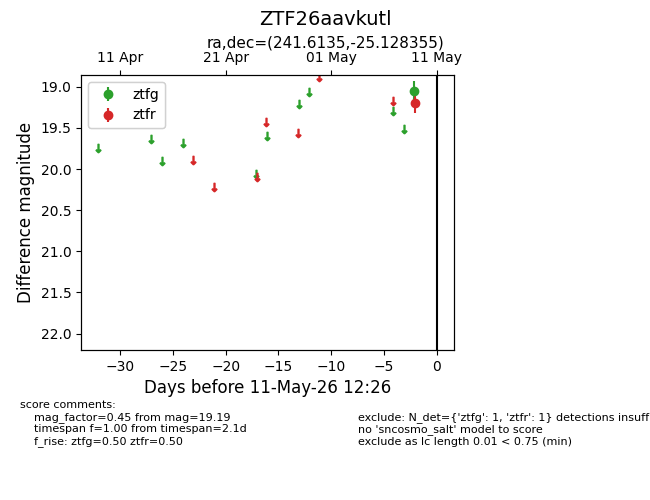
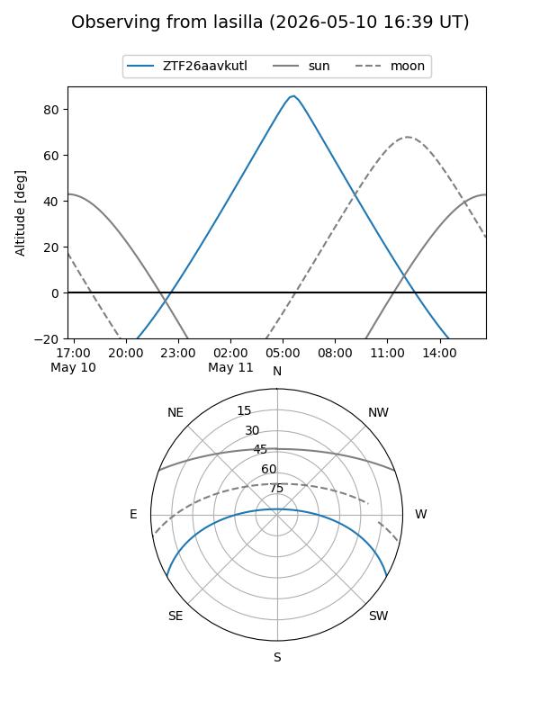
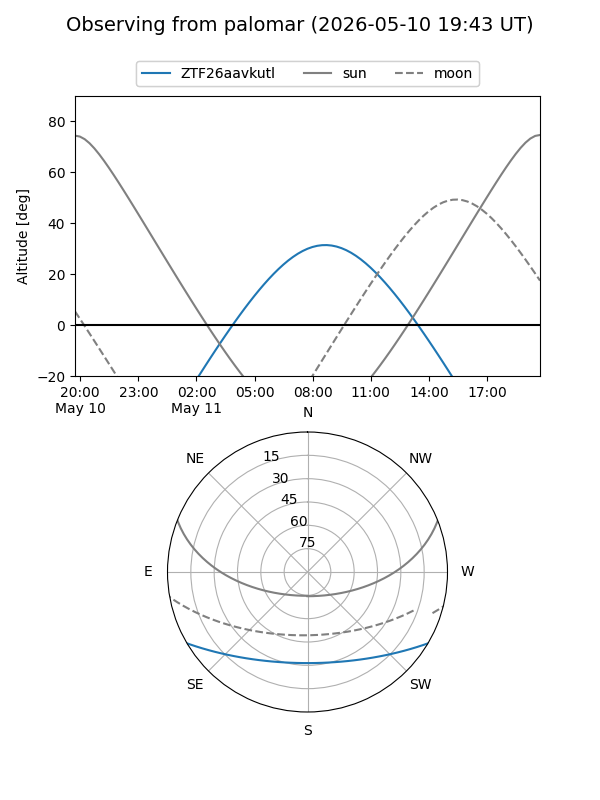

ZTF26aavkutl
Target ZTF26aavkutl at 2026-05-11 12:28
Aliases and brokers:
FINK: link
Lasair: link
ALeRCE: link
alt names
ZTF26aavkutl (ztf,fink_ztf)
Coordinates:
equatorial (ra, dec) = 241.6135,-25.12835
equatorial (HMS+DMS) = 16:06:27.24,-25:07:42.08
galactic (l, b) = (349.2500,+19.73063)
Flags:
Photometry:
last ztfg=19.06, ztfr=19.19
1 ztfg, 1 ztfr detections
Lightcurve

Visibility


Additional plots